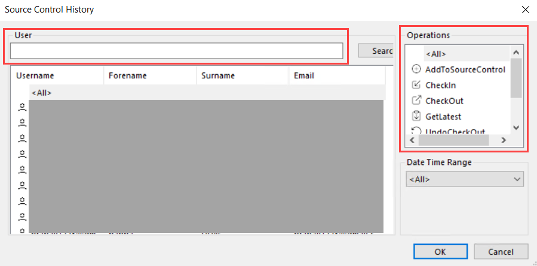

History
History displays the source history of all operations performed in the BOS. See the table below for more information.
Details | More information | Description |
|---|---|---|
User details | Username Forename Surname | User information |
Operations | AddToSourceControl CheckIn CheckOut GetLatest UndoCheckOut Remove Other | Operations available in the local view and server view. |
Date Time Range | Today Yesterday This Week Last Week This Month Last Month This Year From/To | Date range |
Search history of project/user details
- Go to Server View.
- From the Server menu, select History.
- The Source Control History dialog box displays.
- Enter the user details in the User field to search information about the user and click Search.
- You can see the search results filtered in the field below.
- In the Operations section, select the different operation criteria by clicking on any of the given options and then click Search.
- The results display in the output pane as message logs.
